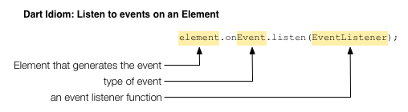

内容摘要
- In Dart, page elements are of type Element.
- An Element knows its parent.
- An Element keeps its children in a List<Element>.
- Change the DOM by adding or removing children of elements.
- Respond to user input with an EventListener.

Add Elements to the DOM
Dynamically add items to the browser page.
As you learned in the previous tutorial, the DOM represents the structure of a web page document using a simple tree structure. Each node in the tree represents an item on the page. Each node in the tree keeps track of both its parent and its children. In Dart, the Node class contains the methods and properties that implement a node’s tree functionality.
HTML page elements are one kind of node that can be in the DOM tree. They have a rectangular area on the page and can receive events. Examples of elements include heading elements, paragraph elements, table elements, button elements, and so on.
In Dart, elements are implemented by the Element class, which is a subclass of Node. Because the nodes you care about most are usually elements, this tutorial focuses on Element, rather than on Node.
- Copy and run the todo app
- About parent and child Elements in Dart
- Setting up the page in HTML
- Getting an element from the DOM
- Registering an event handler
- About EventListener functions
- Adding an element to the DOM tree
- Styling the page elements
- Moving elements within the DOM tree
- Other resources
- What next?
Copy and run the todo app
In this tutorial, you will be working with a sample web app that is a partial implementation of a todo list. This program dynamically changes the DOM, and therefore the web page, by adding elements to the DOM tree.
Try it! Type in the text field and press return. The app adds an item to the list. Enter a few items into the input field:
This is the beginning of an app to manage a list of things to do. Right now, this app is for procrastinators only because the program can only add items to your to do list but not remove them.
About parent and child Elements in Dart
The Node class in Dart implements the basic treeing behavior for nodes in the Dart DOM. The Element class is a subclass of Node that implements the behavior specific to page element nodes. For example, an element knows the width and height of its enclosing rectangle on the page and it can receive events.
You can manipulate the DOM tree by adding and deleting nodes. However, many Dart apps are concerned only with page elements. So for convenience and code simplicity, the Element class implements API for interacting with a subset of the DOM that includes only the nodes that are Elements. You can work with a virtual tree of Elements rather than the more complex tree of Nodes. This tutorial shows you how to manipulate the DOM through the Element class.
An Element has a parent Element and maintains references to its child Elements in a list.

An Element has at most one parent Element.
An Element’s parent is final and cannot be changed.
So you cannot move an Element by changing its parent.
Get an Element’s parent with the getter parent.
For example, if you have an Element with the name anElement
you would refer to its parent element with anElement.parent.

An Element maintains references to its child elements in a list. List is a class in the dart:core library that implements an indexable collection with a length. A list can be of fixed size or extendable.
List is an example of a generic (or parameterized) type—a type that can declare formal type parameters. This means that a list can be declared to contain only objects of a particular type. For example:
| List declaration | List description |
|---|---|
| List<String> | list of strings |
| List<int> | list of integers |
| List<Element> | list of elements |
An Element maintains references to its child element in a List<Element>,
which your Dart code can refer to with the getter children.
The List class has various methods and operators
whereby you can refer to each child Element individually,
iterate over the list, and add and remove elements.
You can change the tree structure by adding children to and removing children from an Element’s list of children.

When you change an Element or its child Elements in your Dart program, you change the DOM and therefore the web page. The browser re-renders the page automatically.
Setting up the page in HTML
Let’s take a look at the todo app to see how it dynamically adds an element to the DOM and displays a new item in the list of things to do.
The HTML code for the todo app sets up the initial HTML page, and thereby the initial DOM tree. You could get the same results using Dart code, but it’s usually better to define the primary page elements in HTML code (easier to read, quicker to load).

The following diagram shows a partial DOM tree for the todo app.
Of interest are the two page elements that have IDs:
to-do-input and to-do-list.
The first identifies the <input> element into which the user types.
The second identifies the <ul> (unordered list) element
containing the task items.
Dart code adds elements to this list
whenever the user enters text into the input element.
Getting an element from the DOM
The following diagram shows the Dart code for the todo app.

The main() function uses dart:html’s top-level query() function to get the interesting elements from the DOM. Because calling query() isn’t free, if a program refers to an element more than once it should stash a reference to the element.
This program stashes a reference
to the input element
in a top-level variable called toDoInput.
The unordered list
is in the top-level variable toDoList.
Note the types of these variables: InputElement and UListElement. These are both subclasses of Element. The dart:html library has dozens of Element subclasses, many of which correspond to certain HTML tags. This program uses three:
| HTML tag | Dart class |
|---|---|
| <input> | InputElement |
| <ul> | UListElement |
| <li> | LIElement |
Registering an event handler
When a user enters text into the input field, a change event fires, indicating that the value in the input field has just changed. The todo app defines a function, addToDoItem(), that can handle these change events. The following code connects addToDoItem() to the input field:

Rather than dissect this busy line of code, think of it as a Dart idiom for adding an event handler to an Element.

A change event is just one of many different types of events
that an input element can generate.
For example, you can use click to handle mouse clicks,
or keyDown for when the user presses a key on the keyboard.
About EventListener functions
The argument passed to the listen() method is a callback function of type EventListener. EventListener is a typedef defined in the dart:html library as follows:
typedef void EventListener(Event event)
As you can see, an EventListener returns no value (void) and takes an Event object as an argument. Any function with this signature is an EventListener. Based on its signature, the addToDoItem() function is an EventListener.
void addToDoItem(Event e) { ... }
The Event object passed into an EventListener function carries information about the Event that occurred. For example, the Event object knows which Element fired the event, and when. For location-specific events such as mouse clicks, the Event object also knows where the event occurred.
The addToDoItem() function ignores the Event object passed to it.
Adding an element to the DOM tree
The change event handler has the following code:

The final line of code is where the DOM gets changed.
An Element keeps references to all of its children in a list called children.
By adding and removing elements to and from this list,
the code changes the DOM.
When the DOM changes, the browser re-renders the browser page.
The effect, in our todo app, is that a new bullet item appears
in the to do list.
Styling the page elements
Let’s take a look at the CSS file for this app.
This code uses three different kinds of CSS selectors. The first is an HTML element selector that matches the <body> element and sets some basic style attributes, such as the background color, for the entire page. Next in the file are two ID selectors: #to-do-input controls the appearance of the input field and #to-do-list sets the appearance of the unordered list element in general. The elements in the list are controlled by the final rule, which uses both an ID selector and an HTML selector. This rule matches all <li> elements in the element with the ID to-do-list, thus styling each item in the to do list.
Moving elements within the DOM tree
Here’s an example that shows how to move an element within the DOM. Try it! Form a word by clicking the letter tiles.
When the program starts,
it creates one button element for each of seven
randomly selected letters.
The program adds each button to a DOM element—a simple
<div> element identified by the CSS selector letterpile—with
a call to letterpile.children.add().
Each button element in the letter pile has a mouse click handler called moveLetter(). If the button is in the letterpile, the mouse click handler moves the button to the end of the word. If the button is in the word, the mouse click handler moves the button back to the letter pile.
To move the button from the letter pile to the word or back, the code simply adds the button to a DOM element that is different from the button’s current parent. Because an element can have only one parent, adding the button to a different parent automatically removes it from its previous parent.
Other resources
- Check out Dart Cookbook, where you'll find many recipes about manipulating the DOM and using CSS. The cookbook also has recipes about basic Dart data types, such strings, lists, maps, and numbers.
- You can find more information about the DOM and CSS in Dart: Up and Running, which also provides thorough coverage of the Dart language, libraries, and tools.
What next?
The next tutorial, Remove DOM Elements, describes how to remove elements from the DOM and items off your todo list.